Árboles
Editor modular de árboles y biblioteca para plantar un jardín.
v0.10.0Estante: Construir la escenagithub.com/adrianmantilla/arboles
Árboles es un editor de árboles para Maya: montas el árbol a mano, rama a rama, con deslizadores que responden al momento, lo guardas en tu biblioteca y lo plantas en la escena tantas veces como quieras.

No es un generador procedural: tú decides dónde va cada rama. Las copias que plantas quedan ligadas al árbol original (el maestro): si cambias el original, cambian todas.
En pocas palabras#
- Editor en tiempo real: tronco y ramas como tubos sobre curvas, con deslizadores, ramas añadidas con un clic, repartidas alrededor del tronco, dobladas a mano o guardadas como favoritas.
- 19 especies de partida (y un tronco vacío), cada una con frondosidad clara, normal o frondosa, y 16 tipos de follaje: hojas, flores, escamas o agujas.
- Biblioteca en tu carpeta, con miniaturas, ramas favoritas, materiales y hojas propias, que puedes llevar a otro ordenador.
- Jardín: plantas con clic sobre el suelo, con giro, tamaño e inclinación al azar, en calidad baja, media o alta, y con un semáforo de triángulos que te avisa si te pasas.
- Texturas de corteza y hoja para cada especie de 512 a 4K, en tres estilos (realista, cartoon y estilizado), con materiales openPBRSurface que se ven en el visor y en Arnold.

Dónde está#
Con MantiTools instalado, Árboles no tiene menú propio en la barra de Maya: va dentro del pack.
- Estante MantiTools: el icono Árboles está en el grupo de construir la escena, junto a Trepadora y GrassEditor. Un clic abre el editor de árboles.
- Clic derecho en el icono: órdenes rápidas.
- Biblioteca para plantar: abre el panel para plantar.
- Árbol de ejemplo: crea un árbol de ejemplo en la escena.
- Crear materiales: crea los materiales clay.
- Convertir materiales a OpenPBR
- Comprobar Árboles: dice la versión de Maya, si está Arnold y dónde está tu biblioteca.
- Menú MantiTools → Árboles: el submenú de la herramienta, con estas entradas:
- Editor de árboles...
- Plantar desde la biblioteca...
- Herramientas rápidas, un submenú con Crear árbol de ejemplo, Generar versión ligera: alta, Generar versión ligera: media, Generar versión ligera: baja, Volver a la malla densa y la casilla Textura de cuadros en la corteza.
- Resolución de texturas: 512 (aula, rápido), 1K (recomendada), 2K o 4K (render final).
- Estilo de texturas: Realista, Cartoon (colores planos) o Estilizado (pintado).
- Carpeta de la biblioteca...
- Crear materiales clay
- Convertir materiales a OpenPBR
- Comprobar instalación
- Acerca de Árboles
- Ajustes: en la ventana central de MantiTools, Ajustes → Árboles (ver Ajustes más abajo).
La primera vez que abres el editor o el panel de plantar, Árboles te pregunta dónde guardar tu biblioteca. Por defecto propone Documentos/Arboles: pulsa Usar esta carpeta o Elegir otra.... Podrás cambiarla después.
Primeros pasos#
Tu primer árbol, de cero a plantado, en cinco minutos.
- Pulsa el icono Árboles del estante. Se abre el editor; la primera vez, con un roble.
- En Empezar desde elige una especie (por ejemplo, Haya) y su frondosidad (Clara, Normal o Frondosa), y pulsa Empezar. El árbol del editor se sustituye por la plantilla; Ctrl+Z recupera el anterior.
- Haz clic en una rama de la lista (o directamente en el visor) y mueve los deslizadores. Todo cambia al momento.
- Prueba Peso: dobla las ramas hacia abajo. Con él pasas de un roble a un sauce.
- Escribe un nombre en Nombre y pulsa Guardar. El árbol se guarda en tu biblioteca con una miniatura del visor.
- Pulsa Plantar... (abajo a la izquierda). En el panel, elige tu árbol, deja la calidad en media y pulsa Plantar con clic.
- Haz clic en el suelo del visor: cada clic planta una copia. Pulsa Esc para terminar.

¿Tu biblioteca está vacía y quieres plantar ya? En el panel de plantar pulsa Ejemplos: añade las 19 especies de serie a tu biblioteca.
El editor de árboles#
El árbol que editas vive en la escena, en el grupo arboles_editor, en malla densa. Mientras arrastras un deslizador se reconstruye en calidad media para ir rápido; al soltarlo, vuelve a la densa y el cambio entra en el deshacer de Maya como un solo paso. Todo se deshace con Ctrl+Z (Cmd+Z en Mac), también con la ventana del editor delante.
La barra de arriba#
| Control | Qué hace |
|---|---|
| Empezar desde | La plantilla de partida: una de las 19 especies o Solo tronco, para empezar de cero |
| Frondosidad | Clara, Normal o Frondosa: cuánto follaje trae la plantilla. Frondosa añade además ramitas con hojas |
| Empezar | Sustituye el árbol del editor por la plantilla elegida (Ctrl+Z lo recupera) |
| Nombre | El nombre con que se guarda en la biblioteca |
| Material | Qué texturas usa el árbol: las de una especie, Clay (sin texturas) o un material propio |
| Material propio… | Crea un material con tus imágenes (ver Tu propio material) |
| Abrir... | Abre un árbol guardado en tu biblioteca |
| Guardar | Guarda el árbol en la biblioteca con una miniatura del visor |
Las especies de serie son: roble, encina, alcornoque, haya, castaño, plátano de sombra, arce, arce en otoño, chopo, abedul, sauce llorón, olivo, almendro en flor, pino piñonero, abeto, ciprés, palmera, árbol seco y arbusto.
La lista de piezas#
A la izquierda está la lista del Tronco y sus ramas (Rama 1, Rama 2…), en árbol: cada rama cuelga de su madre. Puedes elegir una pieza en la lista o haciendo clic en ella en el visor.
Con Ctrl o Mayús seleccionas varias y las cambias a la vez: cada una cambia desde su propio valor, así que las diferencias entre ellas se mantienen.
Los botones de edición#
| Botón | Qué hace |
|---|---|
| Añadir rama | Añade una rama nueva a la pieza seleccionada |
| Rama con un clic | Haz clic sobre el tronco o una rama en el visor y nace una rama justo ahí. Esc para terminar |
| Repetir alrededor | Copia la rama (con todo lo que cuelga de ella) alrededor de su madre, repartida con el ángulo dorado, como en la naturaleza. Te pregunta cuántas copias más (de 1 a 12) |
| Quitar | Quita las ramas seleccionadas y todo lo que cuelga de ellas. El tronco no se puede quitar |
| Copiar ajustes | Copia los valores de la pieza seleccionada |
| Pegar ajustes | Pega los valores copiados en las piezas seleccionadas del mismo tipo, sin moverlas de sitio |
| Ramas favoritas | Guardar la rama seleccionada... para reutilizarla en otros árboles, o Insertar una que ya guardaste |
| Enderezar | Devuelve la curva de las ramas seleccionadas a su forma calculada (quita lo que arrastraste con los tiradores) |
| Plantar... | Abre el panel para plantar árboles de la biblioteca |
Ayudas del visor#
Debajo de la lista hay tres casillas:
- Tiradores de la curva: muestra tres puntos amarillos en la rama seleccionada. Muévelos en el visor para curvarla a mano. Enderezar lo deshace.
- Figura humana (1,75 m): una silueta junto al árbol para juzgar la escala. No se selecciona ni sale en el render.
- Cuadros en la corteza: una textura de cuadros para revisar las UV. Pulsa 6 en el visor para verla.
Los deslizadores#
Al elegir una pieza, a la derecha salen sus deslizadores, en tres secciones: Forma, Follaje (solo en las ramas) y Avanzado (plegada; se queda abierta si la abres). Si dejas el ratón quieto sobre un deslizador, sale una frase y un dibujo de qué hace, de menos a más.
Cada deslizador tiene al lado una casilla numérica para escribir el valor exacto.
Tronco: Forma#
| Deslizador | Qué hace | Rango (por defecto) |
|---|---|---|
| Altura (cm) | Altura del tronco | 50 a 3000 (600) |
| Radio en la base (cm) | Radio del tronco junto al suelo | 2 a 200 (25) |
| Estrechamiento | Cuánto adelgaza hacia la punta (1 = no adelgaza) | 0,05 a 1 (0,35) |
| Inclinación (°) | Cuánto se separa el tronco de la vertical | 0 a 60 (0) |
| Curvatura | Cuánto se curva | -1 a 1 (0,15) |

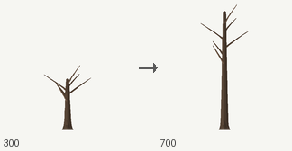

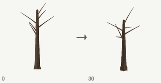

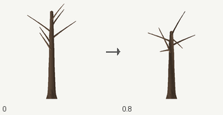
Tronco: Avanzado#
| Deslizador | Qué hace | Rango (por defecto) |
|---|---|---|
| Dirección (°) | Hacia dónde se inclina y se curva el tronco | 0 a 360 (0) |
| Torsión (°) | Retuerce la corteza a lo largo de la pieza | -360 a 360 (0) |
| Raíces | Contrafuertes que ensanchan la base | 0 a 1 (0,4) |
| Irregularidad | Ondas en la sección, para que no parezca un tubo perfecto | 0 a 1 (0,25) |
| Nudos | Abultamientos a lo largo de la pieza | 0 a 10 (2) |
| Horquilla | Altura donde el tronco se divide en dos o tres, como un roble o un castaño viejo. 0 = no se divide | 0 a 0,9 (0) |
| Brazos | En cuántos troncos se divide en la horquilla | 2 o 3 (2) |
| Abertura | Cuánto se separan los brazos al salir; luego se enderezan hacia arriba | 5 a 80 (30) |

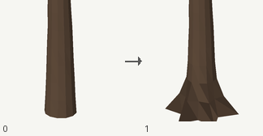
La horquilla en Y#
Para partir el tronco en dos o tres, selecciona el Tronco, abre Avanzado y sube Horquilla: es la altura del corte, como fracción del tronco. Brazos dice en cuántos troncos se divide y Abertura cuánto se separan. Las ramas que nacen por encima de la horquilla se reparten entre los brazos.

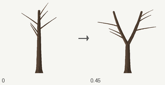

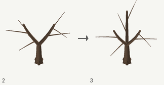

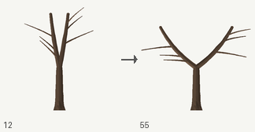
Rama: Forma#
| Deslizador | Qué hace | Rango (por defecto) |
|---|---|---|
| Longitud (cm) | Largo de la rama | 10 a 2000 (250) |
| Ángulo de salida (°) | Ángulo entre la rama y su madre al nacer | 0 a 120 (50) |
| Peso | Cuánto la dobla su propio peso. Las ramas largas y finas caen más | 0 a 1 (0,3) |
| Curvatura | Cuánto se curva; positiva, hacia arriba | -1 a 1 (0,1) |

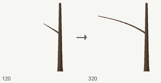

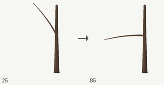

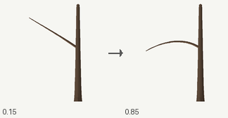

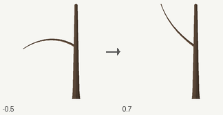
Peso es el deslizador estrella: con él cambia el carácter de todo el árbol.

Rama: Avanzado#
| Deslizador | Qué hace | Rango (por defecto) |
|---|---|---|
| Dónde nace | Altura a lo largo de la madre (0 = base, 1 = punta) | 0 a 1 (0,6) |
| Giro (°) | Posición alrededor de la madre | 0 a 360 (0) |
| Grosor | Grosor respecto a la madre en el punto donde nace | 0,05 a 1 (0,45) |
| Estrechamiento | Cuánto adelgaza hacia la punta (1 = no adelgaza) | 0,02 a 1 (0,2) |
| Torsión (°) | Retuerce la corteza a lo largo de la pieza | -360 a 360 (0) |
| Irregularidad | Ondas en la sección | 0 a 1 (0,15) |
| Nudos | Abultamientos a lo largo de la pieza | 0 a 10 (1) |

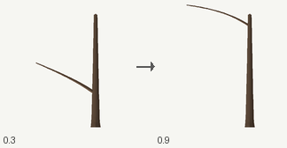

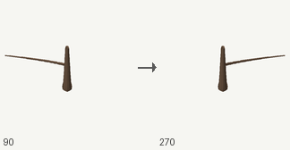
Dónde nace y Giro dicen dónde está la rama; por eso Pegar ajustes no los copia: la rama se queda en su sitio.
Rama: Follaje#
| Control | Qué hace | Rango (por defecto) |
|---|---|---|
| Hojas | Tipo de grupo de hojas que cuelga de la rama | lista (Hoja ancha) |
| Densidad | Cuántos grupos de hojas (0 = ninguno) | 0 a 2 (0,6) |
| Tamaño | Escala de los grupos de hojas | 0,3 a 3 (1) |
| Zona con hojas | Parte de la rama con hojas, contando desde la punta | 0,05 a 1 (0,6) |
| Hacia el cielo | Cuánto miran las hojas hacia arriba | 0 a 1 (0,4) |
| Usar como hoja… | Convierte en hoja una malla tuya (ver Hoja propia) | botón |

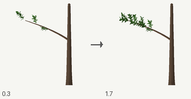

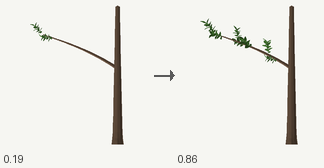

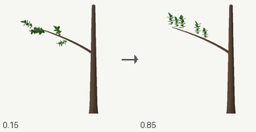
Tipos de hojas#
| Tipo en la lista | Se parece a |
|---|---|
| Sin hojas | Ramas desnudas |
| Hoja ancha | Haya |
| Hoja lobulada (roble) | Roble |
| Hoja pequeña (encina) | Encina, alcornoque |
| Hoja palmeada (arce, plátano) | Arce, plátano de sombra |
| Hoja larga dentada (castaño) | Castaño |
| Hoja fina | Sauce, olivo |
| Hoja redonda | Abedul, chopo |
| Hoja grande | Hojas grandes, como el magnolio |
| Plumosa | Acacia, fresno, mimosa |
| Foliolos en pluma (palmera) | Palmera: la rama hace de nervio de la hoja |
| Flores (almendro, cerezo) | Almendro, cerezo |
| Escamas | Ciprés, tuya |
| Agujas | Pinos |
| Agujas largas en borla | Pino piñonero |
| Agujas cortas en escobilla | Abeto, tejo |
Las hojas propias que hayas creado aparecen también en la lista, como Propia: nombre.
Hoja propia#
Puedes usar como hoja una malla modelada por ti.
- Modela la hoja de pie, con el tallo abajo.
- Selecciónala en la escena (no una malla del árbol).
- En el editor, elige las ramas donde la quieres y pulsa Usar como hoja… en Follaje.
- Dale un nombre. La hoja se pone en las ramas elegidas que ya tenían hojas (si ninguna tenía, en todas las elegidas).
La hoja se guarda en tu biblioteca, en la carpeta hojas, y viaja dentro de cada árbol que la use.
Generar versiones ligeras#
El editor trabaja con la malla densa. Abajo a la derecha tienes tres botones, Generar alta, Generar media y Generar baja, cada uno con los triángulos que tendrá. Crean al lado una copia terminada del árbol en esa calidad, con las mismas UV, lista para plantar o renderizar.
Fuera del editor, con un árbol seleccionado, MantiTools → Árboles → Herramientas rápidas → Generar versión ligera hace lo mismo sobre ese árbol, y Volver a la malla densa lo deshace.
El semáforo de triángulos#
Abajo, en el editor, un contador dice cuántos triángulos tiene el árbol en calidad media, con un color:
- Verde (hasta 40.000 triángulos): perfecto para un jardín de 50 árboles.
- Amarillo (hasta 80.000): pesado; usa la calidad baja si plantas muchos.
- Rojo (más de 80.000): demasiado para 50 árboles. Quita ramas o follaje.
Está pensado para que 50 árboles se rendericen en un ordenador del aula.
Plantar un jardín#
Abre el panel con Plantar... en el editor, con MantiTools → Árboles → Plantar desde la biblioteca... o con Biblioteca para plantar en el clic derecho del estante.
El panel enseña tus árboles guardados con su miniatura. Elige uno y pulsa Plantar con clic (o haz doble clic en él). Cada clic en el visor planta el árbol sobre el suelo, bajo el ratón. Esc para terminar.

Opciones al plantar#
| Control | Qué hace | Valores (por defecto) |
|---|---|---|
| Calidad | Con qué calidad se generan las copias. Media es la buena para un jardín | alta, media, baja (media) |
| Giro aleatorio | Cada copia gira al azar sobre sí misma, para que no se vean todas iguales | activado |
| Formas | Cuántas formas distintas del mismo árbol se reparten al azar (1 = todas iguales). Cada forma cambia un poco sus ramas; todas siguen ligadas al original | 1 a 4 (1) |
| Tamaño ± | Cada copia sale al azar hasta este porcentaje más grande o más pequeña | 0 a 40 % (0) |
| Inclinar hasta | Cada copia se inclina al azar hacia cualquier lado, como mucho estos grados | 0 a 15° (0) |
Los botones del panel#
| Botón | Qué hace |
|---|---|
| Plantar con clic | Cada clic en el visor planta el árbol elegido. Esc para terminar |
| Desligar | Convierte las copias seleccionadas en árboles independientes: dejan de cambiar con su maestro |
| Editar maestro | Abre en el editor el árbol elegido (o el de la copia seleccionada en el visor) |
| Ejemplos | Añade a tu biblioteca los árboles de serie. No toca los que ya tengas |
| Refrescar | Vuelve a leer la biblioteca y recuenta el jardín |
Debajo, una línea dice cuántos árboles y triángulos tiene tu jardín, con su semáforo: verde hasta 2.000.000 de triángulos (50 árboles de 40.000) y amarillo hasta el doble.
Copias ligadas al maestro#
Al plantar, Árboles crea un maestro oculto de cada árbol (en el grupo arboles_maestros) y cada copia es una instancia de ese maestro con su propia posición y giro. Por eso un jardín de muchos árboles pesa poco.
Para cambiar todas las copias a la vez:
- Selecciona una copia y pulsa Editar maestro.
- Cambia lo que quieras en el editor y pulsa Guardar.
- Árboles te dice cuántas veces está plantado y pregunta si quieres actualizar todas las copias. Acepta: cambian todas a la vez.
¿Quieres que una copia sea distinta? Selecciónala y pulsa Desligar: pasa a ser un árbol independiente que ya no cambia con el maestro. Plantar y desligar se deshacen con Ctrl+Z.
Texturas y materiales#
Cada especie trae su corteza (color, relieve y rugosidad, repetible) y su hoja (color, relieve, rugosidad y trasluz). El desplegable Material del editor elige las de qué especie usa tu árbol, o Clay (sin texturas), un gris neutro cómodo para modelar. Si una especie aparece como «(aún sin texturas)», sus texturas no están instaladas y el árbol se ve en clay.
Los materiales son openPBRSurface: se ven en el visor y Arnold los renderiza sin cargar nada más. Corteza y hoja van en materiales separados (arboles_<especie>_corteza y arboles_<especie>_hoja). En el visor, las texturas se ven con el modo texturizado (tecla 6). También puedes asignar a mano cualquier material de Maya a las mallas del árbol.
Resolución de texturas#
En MantiTools → Árboles → Resolución de texturas (o en Ajustes) eliges la calidad: 512 o 1K mientras trabajas en clase, 2K o 4K para el render final. Cambiarla actualiza los árboles que ya tienes en la escena. Si falta una resolución, se usa la más cercana que haya.
Estilo de texturas#
En MantiTools → Árboles → Estilo de texturas eliges el aspecto de todas las especies: Realista, Cartoon (colores planos), casi sin brillo, o Estilizado (pintado), como pintado a mano. También cambia los árboles que ya están en la escena.

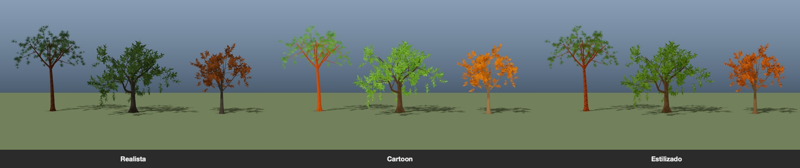
Materiales clay#
Crear materiales clay (en el submenú, o Crear materiales en el estante) crea arboles_clay_corteza y arboles_clay_hoja: dos openPBRSurface grises, el de la hoja con algo de trasluz.
Tu propio material#
En el editor, Material propio… te deja usar tus imágenes:
- Corteza, color y, si los tienes, Corteza, relieve (normal) y Corteza, rugosidad. Debe ser repetible, sin costuras: las UV de la corteza dan vueltas enteras alrededor de cada rama.
- Hoja, color y, opcional, Hoja, relieve (normal). Una sola hoja de pie: el tallo abajo, la punta arriba y el nervio en el centro. Árboles la repite en cuatro tonos para que el follaje no sea de un verde uniforme.
Ponle un Nombre, elige al menos un color (de corteza o de hoja) y pulsa Crear material. Se guarda en tu biblioteca (carpeta materiales) y aparece en la lista Material con «(propio)». Los estilos Cartoon y Estilizado no cambian tus imágenes.
Convertir escenas viejas a OpenPBR#
Las escenas hechas con versiones anteriores de Árboles usaban standardSurface. Para pasarlas a openPBRSurface, usa MantiTools → Convertir materiales a OpenPBR (convierte a la vez los de Árboles y los de Trepadora) o MantiTools → Árboles → Convertir materiales a OpenPBR (solo los de Árboles). Las mallas, las texturas y los ajustes no cambian, y se deshace con Ctrl+Z. Hace falta Maya 2025.3 o posterior. Más detalles en OpenPBR.
La biblioteca#
Tu biblioteca es una carpeta normal, que puedes copiar a otro ordenador o a un pendrive. Dentro tiene:
| Carpeta | Qué guarda |
|---|---|
arboles | La receta de cada árbol guardado (.json) |
miniaturas | La miniatura de cada árbol (.png) |
ramas | Tus ramas favoritas, con todo lo que cuelga de ellas |
materiales | Tus materiales propios |
hojas | Tus hojas propias |
Se cambia en MantiTools → Árboles → Carpeta de la biblioteca... o en Ajustes → Árboles.
Herramientas rápidas#
El submenú MantiTools → Árboles → Herramientas rápidas tiene órdenes que no necesitan el editor:
- Crear árbol de ejemplo: crea un árbol de copa redonda en la escena, en malla densa, y dice cuántos triángulos tiene.
- Generar versión ligera: alta, media y baja: rehace en esa calidad el árbol seleccionado (o el de la rama seleccionada) y dice los triángulos de antes y de después.
- Volver a la malla densa: vuelve a la calidad máxima.
- Textura de cuadros en la corteza: pone o quita una textura de cuadros en la corteza clay para revisar las UV.
Ajustes#
En la ventana central de MantiTools, Ajustes → Árboles tiene dos secciones:
| Sección | Control | Qué hace |
|---|---|---|
| Biblioteca | Carpeta de la biblioteca | Donde Árboles guarda tus árboles, miniaturas y materiales propios |
| Texturas | Resolución de texturas | 512 (aula, rápido), 1K (recomendada), 2K o 4K (render final). Cambia también las texturas de los árboles que ya están en la escena |
| Texturas | Estilo de las texturas | Realista, Cartoon (colores planos) o Estilizado (pintado). Cambia también los árboles de la escena |
Son los mismos ajustes que los del submenú: si cambias uno aquí, el submenú se actualiza solo. Si tu profesor ha fijado algún ajuste para toda la clase, lo verás bloqueado (ver Modo profesor).
Consejos#
- Empieza siempre desde la especie que más se parezca a lo que buscas: es mucho más rápido que montar un árbol desde Solo tronco.
- Selecciona varias ramas a la vez para cambiarlas juntas: cada una conserva su diferencia con las demás.
- Para un árbol natural, monta una rama que te guste y usa Repetir alrededor: el ángulo dorado evita que las ramas queden alineadas.
- Activa Figura humana (1,75 m) de vez en cuando: es fácil hacer árboles gigantes o enanos sin darte cuenta.
- Mira el semáforo antes de guardar. Si vas a plantar muchos, que esté en verde.
- Usa Formas, Tamaño ± e Inclinar hasta al plantar: con un solo árbol guardado consigues un bosque que no parece repetido.
- Trabaja con texturas a 512 o 1K y sube a 2K o 4K solo para el render final.
- Guarda tus mejores ramas en Ramas favoritas para montar árboles nuevos más deprisa.
Problemas frecuentes#
Los árboles se ven grises en el visor. Pulsa 6 en el visor (modo con texturas). Si siguen grises, mira su Material en el editor: puede estar en Clay o la especie puede no tener texturas instaladas.
Las hojas se ven negras en el visor. Activa la iluminación por las dos caras: en el visor, Lighting → Two Sided Lighting. El editor la activa solo.
La biblioteca está vacía en el panel de plantar. Guarda un árbol en el editor o pulsa Ejemplos en el panel.
Cambié el maestro y las copias no cambian. Al pulsar Guardar en el editor, Árboles pregunta si quieres actualizar las copias: tienes que aceptar. Las copias desligadas ya no cambian con el maestro.
Al hacer clic para plantar no aparece nada. Elige antes un árbol en la lista del panel. El árbol se planta sobre la malla que hay bajo el ratón o, si no hay ninguna, sobre el plano del suelo; haz clic hacia el suelo, no hacia el cielo.
El render va muy lento con muchos árboles. Mira el semáforo del jardín en el panel. Planta en calidad baja, baja la Densidad de follaje del árbol o quita ramas.
La escena es vieja y sus materiales son standardSurface. Usa MantiTools → Convertir materiales a OpenPBR. Ver OpenPBR.
No sé si está todo bien instalado. Usa Comprobar Árboles en el clic derecho del estante (o Comprobar instalación en el submenú): dice la versión de Maya, si Arnold está cargado y si tu biblioteca se puede escribir.
Para otros problemas, mira Problemas frecuentes.
Ver también#
- Trepadora: hiedra y enredaderas para cubrir muros y ruinas.
- GrassEditor: hierba y vegetación del suelo bajo los árboles.
- Materials: materiales OpenPBR para el resto de la escena.
- OpenPBR: qué es y cómo convertir escenas viejas.
- Flujo de trabajo: en qué momento de la escena usar cada herramienta.
- Ajustes y La ventana central.